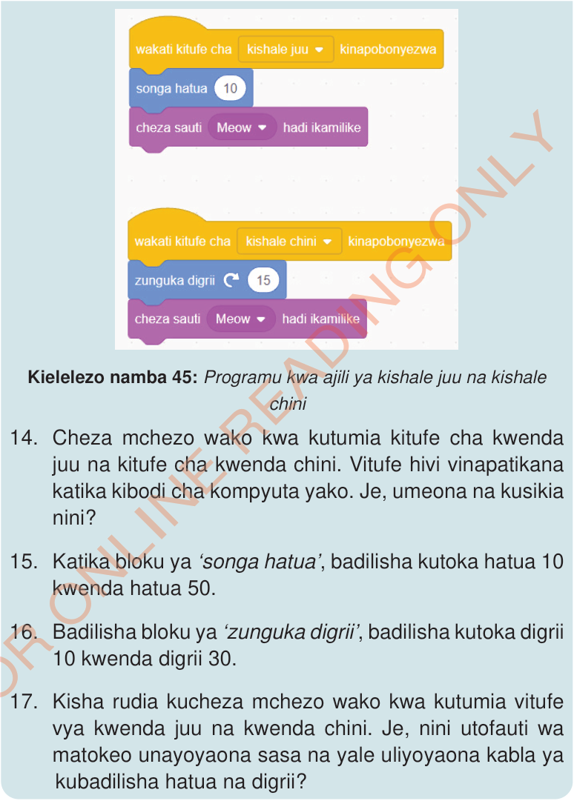

Kielelezo namba 45 kinaonesha/kinabainisha programu kwa ajili ya kishale juu na kishale chini.
14. Cheza mchezo wako kwa kutumia kitufe cha kwenda juu na kitufe cha kwenda chini. Vitufe hivi vinapatikana katika kibodi cha kompyuta yako. Je, umeona na kusikia nini?
15. Katika bloku ya ‘songa hatua’, badilisha kutoka hatua 10 kwenda hatua 50.
16. Badilisha bloku ya ‘zunguka digrii’, badilisha kutoka digrii 10 kwenda digrii 30.
17. Kisha rudia kucheza mchezo wako kwa kutumia vitufe vya kwenda juu na kwenda chini. Je, nini utofauti wa matokeo unayoyaona sasa na yale uliyoyaona kabla ya kubadilisha hatua na digrii?